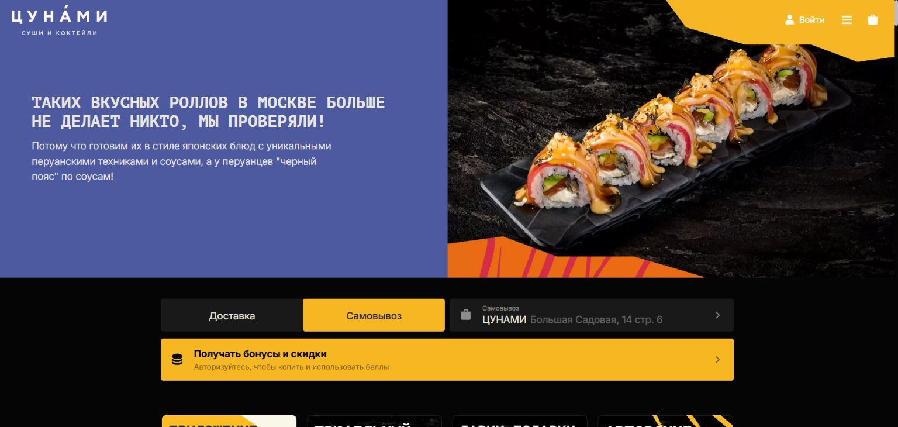

Действующая витрина · снимок 8 октября 2026
Веб · компьютер и телефон
delivery.tsunami.rest
Меню, состав блюд, корзина, доставка и самовывоз. Проверять нужно оба размера экрана.
Для первого разговора с разработчиком
Ищем команду для обновления сайта доставки и пути заказа. Нужно помочь гостю выбрать блюда, понять условия доставки и спокойно дойти до оплаты — на компьютере и телефоне.
На странице — текущие продукты, наблюдаемые затруднения и задача для оценки.
01 / Текущие продукты
Откройте действующие продукты, чтобы оценить интерфейс и путь заказа. Меню, корзина, доставка, самовывоз, вход и лояльность — отправная точка проекта.

Меню, состав блюд, корзина, доставка и самовывоз. Проверять нужно оба размера экрана.
Текущие мобильные приложения
Мобильный канал для заказа, истории и лояльности. В разборе iOS вход появлялся при открытии корзины; меню и добавление блюд были доступны до него.
Ссылки взяты с действующего сайта. На созвоне отдельно обсудим обновление этих приложений или переход на новые.
02 / Проблемы пути заказа
Это наблюдения из разборов интерфейса и пользовательских сценариев. На старте разработки нужно воспроизвести их в актуальной версии сайта и приложений.
01 · МЕНЮ
В разобранных сценариях окно точного адреса открывалось на первом клике по блюду или добавлению в корзину.
ХотимСначала посмотреть состав и выбрать блюда. При необходимости — ранний выбор зоны или точки, без обязательного полного адреса.
02 · ДОСТАВКА
Гостю не всегда понятно, привезут ли заказ, сколько стоит доставка и когда он приедет.
ХотимОриентир по зоне, времени и цене — заранее. Точные условия и итог — после адреса, до оплаты.
03 · ВХОД
В разборах встречались затруднения с SMS и возвратом после VK ID. В iOS вход появлялся при переходе в корзину.
ХотимОценить гостевой заказ. Если подтверждение обязательно — понятное восстановление и сохранение корзины.
04 · ОФОРМЛЕНИЕ
Кнопки оформления и оплаты не всегда находили; при увеличенном масштабе переход перекрывался.
ХотимЗаметную корзину и однозначную кнопку следующего шага на телефоне, небольшом экране и при увеличении.
05 · КОРЗИНА
Приборы, бонусы, акции и доступность блюд нужно сделать понятными до завершения заказа.
ХотимПроверять состав, комплектацию и итог в корзине, без неожиданных изменений на оплате.
06 · ПОВТОР
Хотим упростить продолжение незавершённой корзины и проверить полный сценарий повторного заказа.
ХотимСохранённые адрес и сессию, проверку цен и наличия. Другие устройства и напоминания — отдельные опции.
Наблюдения относятся к разборам начала октября 2026. Они не означают, что ошибка возникает у каждого гостя или на всех устройствах. Частоту и эффект изменений проверяем после настройки событий и тестирования.
03 / Желаемый путь
Предлагаемый сценарий для проектирования и проверки. Точную реализацию определим с командой с учётом зон доставки, наличия и ограничений интеграций.
Без регистрации и обязательного полного адреса. Доступность связана с выбранной зоной или точкой.
Заметная, редактируемая. Состав, приборы, бонусы и итог видны сразу.
Проверка доставки, точная цена и время. Самовывоз — самостоятельный сценарий.
Минимум обязательных действий. Карта / СБП, восстановление после ошибки без потери корзины.
Понятный статус оплаты и заказа, передача в iiko и связь с курьерской доставкой.
Можно предложить доработку текущего решения, новую витрину поверх действующих систем или другую платформу. Нужны объяснение ограничений и обоснованный первый этап.
04 / Результат проекта
Бизнес-цель — больше успешно оплаченных и повторных заказов в собственном канале. Реализация должна позволять проверить это по заказам, оплатам и событиям пути.
Первый этап: веб-сайт и основной путь заказа. Отдельная оценка: iOS / Android, перенос данных и дополнительные функции. Итоговый состав запуска согласуем после проверки возможностей платформы.
05 / Следующий шаг
На первом разговоре хотим понять, какое решение вы предлагаете и как организуете переход.
Ответьте в том письме или чате, где получили эту ссылку. Для начала достаточно подхода, диапазона стоимости, сроков и уточняющих вопросов.
Отдельные цены дизайна, веба, iOS и Android, каждой интеграции, миграции и запуска. Регулярные платежи: подписка, хостинг, лицензии, поддержка, SMS, комиссии и эквайринг; укажите налоги и внешние расходы. По возможностям — есть / настройка / доработка / невозможно.
Перенос меню, клиентов, бонусов и истории зависит от экспорта/API Starter. Нужны проверка переноса, работа с действующими приложениями, владение кодом и аккаунтами, выгрузка данных при следующем переходе. Объёмы для нагрузки и миграции, договорные условия и доступы уточним отдельно.